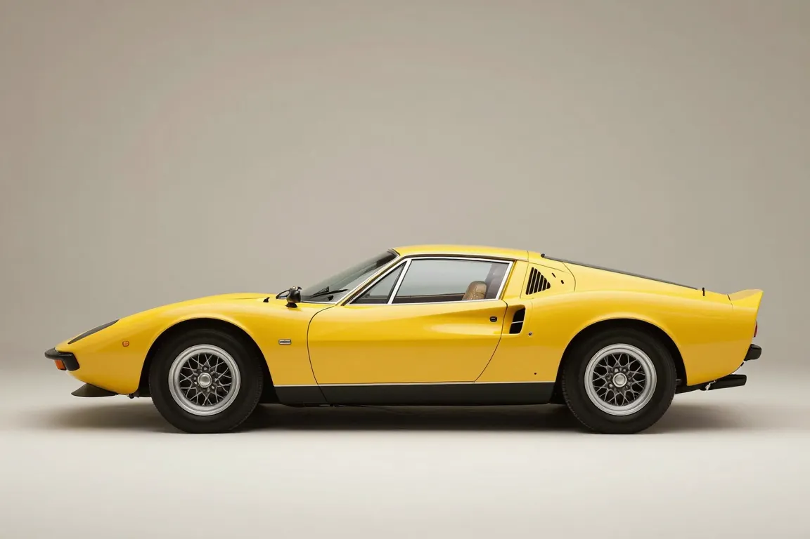

The car as a low wedge. A pointed nose, a flat bonnet that rises to a high tail and a long straight crease along the flank. It has pop-up lamps and sharp, flat panels with matte black trim.

Core thesis
A fast car cuts the air as a blade does. It has one straight line from a low nose to a high tail, with flat panels and sharp creases.
Design principles
Draw one straight line from a low nose to a high tail, at a rise of 8 to 12 degrees.
Keep the body very low, with a height of 1.05 to 1.15 m.
Make the panels flat and join them in sharp creases, with a strong line at the waist.
Hide the headlamps in the nose, and open them in pop-up pods.
Slope the windscreen at a very low angle, and run the glass in a long wedge to the tail.
Use matte black trim, black louvres and black wheel arches to cut the body into planes.
Trim the cabin in cord, velour or plaid, with a flat dashboard of black plastic and rows of small switches.